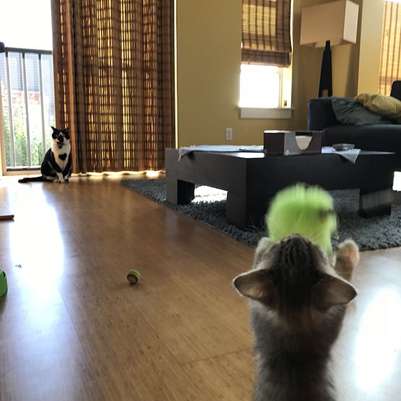
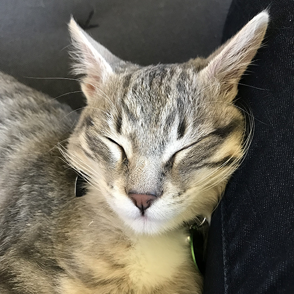
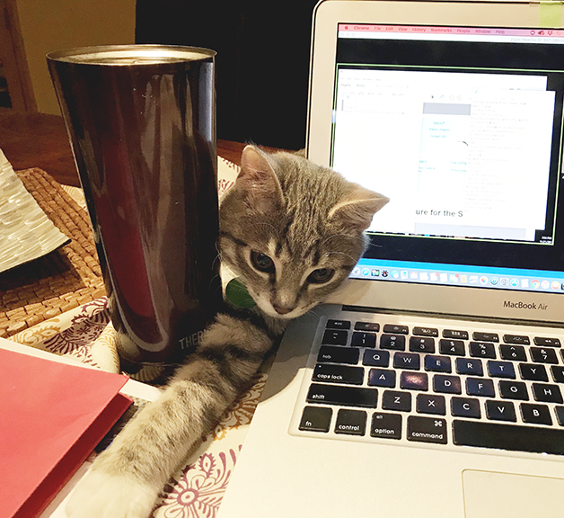

Seymour, a gray dilute mackeral tabby is 9 months old. He loves to chase a flying feather toy, scale all of our leather chairs (he's destroyed all 8 dining and bar chairs in 6 months) and "bullies" his big brother, Sampson. He's also a sweet snuggler who loves to climb into our laps and hide under laptops when you work. And don't think about being on the phone - he'll nip at your feet when trying to take client calls or jump into the view of video cameras.
Most all tabbies have a distinctive “M” on their foreheads, and there are a couple of legends that describe the origin of the mark.
One legend comes from the ancient Egyptians. Cats were called Mau, most likely because of the sound they make. The word “Mau” also translated to seeing, or light. Since cats’ eyes appear so luminous at night, they are associated with the moon, and their marking is said to reflect that relationship. The Egyptian Mau is a direct descendant of those ancient Egyptian cats. An offspring of the African Wild Cat, it carries the “M” on its forehead to this day.
Another version of the Mohammed legend claims that when his cat killed the snake, the grateful Muhammad stroked her back – hence cats never fall on their backs. He also put his noble hand on her forehead and that is why every tabby has four dark lines on her forehead.
My theory? It stands for “Master of the Universe.”
